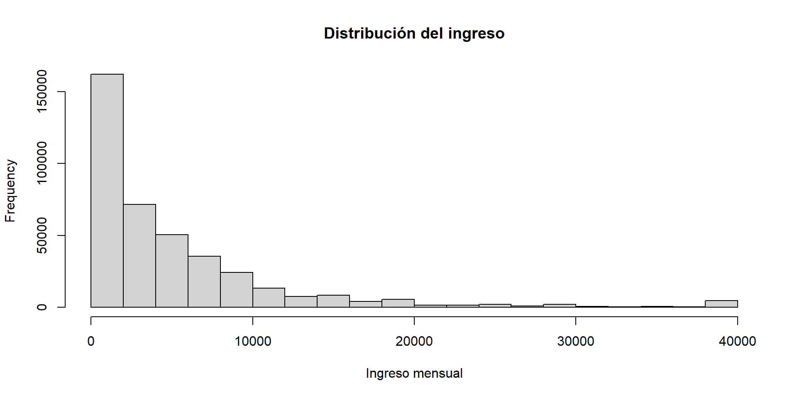
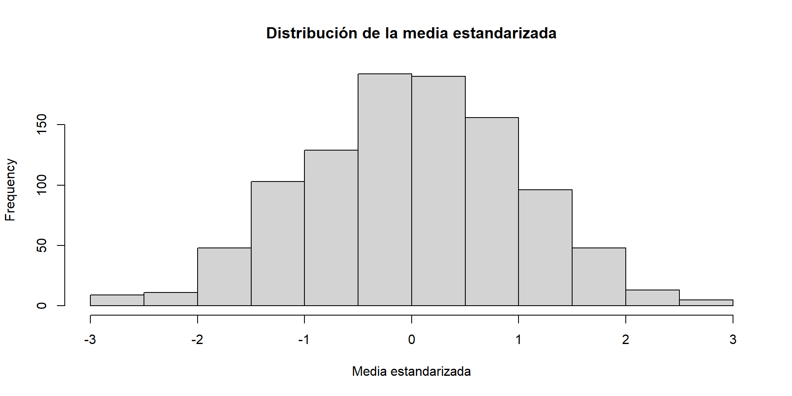
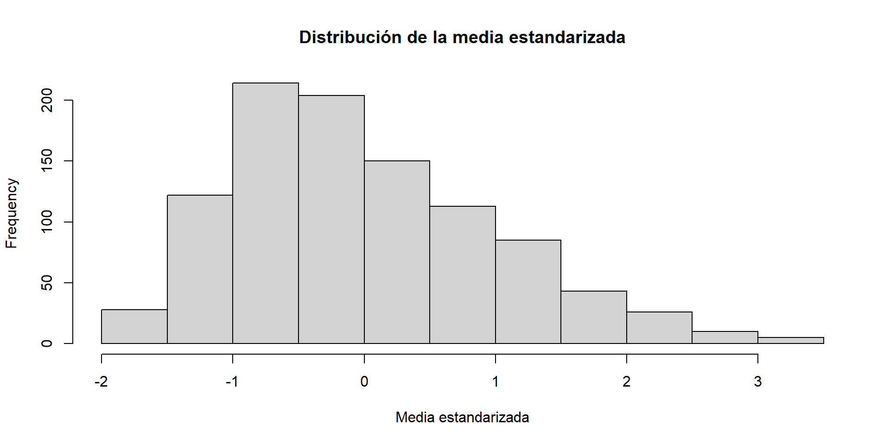
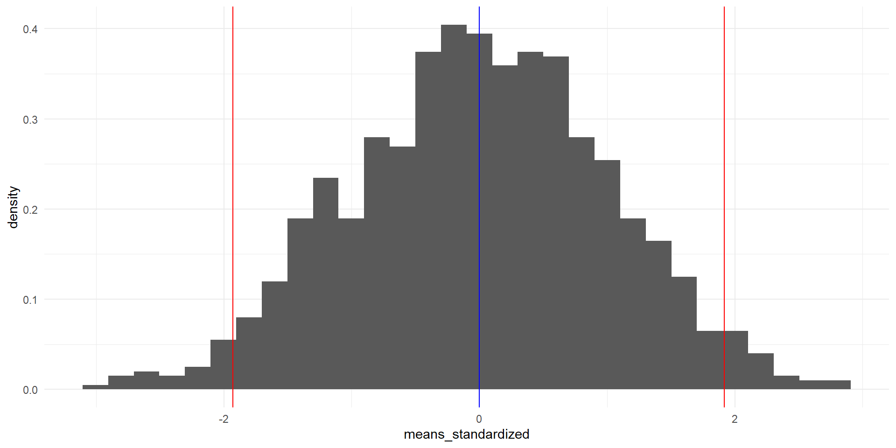
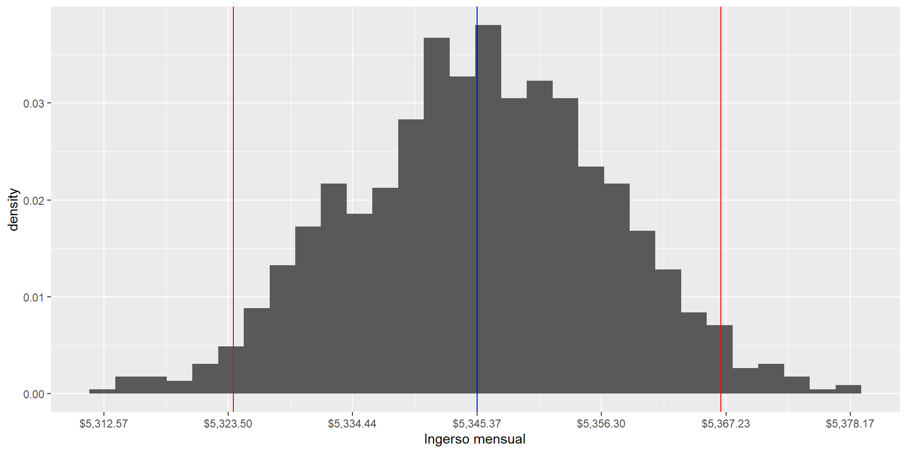
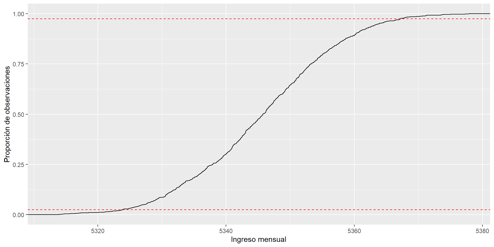
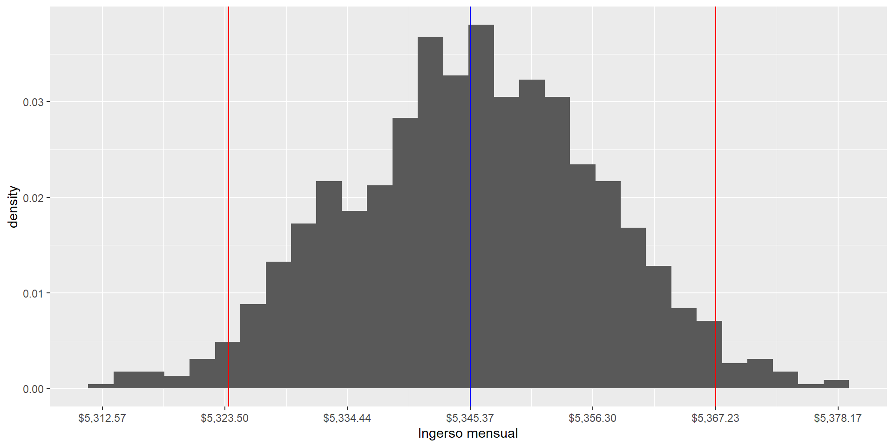

Clase 2
26 de marzo de 2025
Vamos a estudiar las herramientas básicas de probabilidad e inferencia estadística que sentarán las bases para los siguientes temas del curso.
Para una revisión más extensa de estos temas, puedes consultar el Crash Course de estadística.
La inferencia estadística se concentra en entender y cuantificar la incertidumbre de parámetros de interés.
Ya vimos cómo resumir y graficar datos en varios contextos.
Vamos a estudiar cómo responder nuevas preguntas como:
¿Los datos son diferentes para dos grupos?
¿Los datos son representativos de la población?
Generalmente, vamos a usar:
\(p\) para denotar a una proporción de la población
\(\hat p\) para denotar a una proporción de una muestra
Igualmente:
\(\mu\) para denotar a una media de la población
\(\bar x\) para denotar a una media de una muestra
Ejemplo 1 Imaginemos que un profesor separa a sus alumnos en dos grupos: los que se sientan del lado izquierdo y los que se sientan del lado derecho.
Sea \(\hat p_L\) la proporción de alumnos que aprueban en el grupo izquierdo, y \(\hat p_R\) la proporción de alumnos que aprueban en el grupo derecho.
¿Te sorprendería que \(\hat p_L \neq \hat p_R\)?
Mientras que seguramente \(\hat p_L\) sea muy parecida a \(\hat p_R\), sería raro que fueran exactamente iguales.
Seguramente observaríamos una pequeña diferencia por azar.
Estudiar la aleatoriedad es una forma importante del estudio de la estadística.
A lo largo del curso veremos tres maneras de cuantificar variabilidad en los datos:
Aleatorización
Remuestreo (o bootstrap)
Modelos matemáticos
Vamos a considerar un estudio que investigó la discriminación por género en la contratación de personal en un banco en los años 1970.
La pregunta de investigación que hacen los autores es:
¿Las personas que se identifican como mujeres son discriminadas en las decisiones de promoción, hechas por gerentes que se identifican como hombres?1
Participaron 48 supervisores de sucursales bancarias, identificados como hombres, que atendieron a un curso de habilidades gerenciales en la Universidad de Carolina del Norte en 1972.
Cada supervisor recibió un archivo con información sobre un supuesto candidato a una vacante de gerente de sucursal.
Los archivos contenían datos idénticos, excepto que la mitad de los archivos indicaban que la persona era un hombre y la otra mitad que era una mujer.
Los archivos fueron asignados aleatoriamente entre los supervisores.
Se recolectaron datos del sexo asociado al archivo y la decisión de promoción tomada por el supervisor.
Los datos están disponibles en el paquete de datos de Çetinkaya-Rundel y Hardin (2024).
# A tibble: 4 × 3
sex decision n
<fct> <fct> <int>
1 male promoted 21
2 male not promoted 3
3 female promoted 14
4 female not promoted 10tally |>
pivot_wider(
names_from = decision,
values_from = n
) |>
mutate(
Total = promoted + `not promoted`,
`% promoted` = 100 * promoted / Total
) |>
# Great tables
gt() |>
fmt_number(
columns = where(is.numeric),
decimals = 0
) |>
grand_summary_rows(
columns = !matches("%|sex"),
fns = "Total" ~ sum(.)
)| sex | promoted | not promoted | Total | % promoted | |
|---|---|---|---|---|---|
| male | 21 | 3 | 24 | 88 | |
| female | 14 | 10 | 24 | 58 | |
| Total | — | 35 | 13 | 48 | — |
Promovieron al 88% de los hombres, mientras que solo promovieron al 58% de las mujeres.
¿Tenemos evidencia suficiente para concluir que las mujeres fueron discriminadas en las decisiones de promoción?
Hay una diferencia grande en las tasas de promoción por género, lo que sugiere la existencia de discriminación.
Sin embargo, todavía no estamos seguros de que la diferencia representa discriminación o si es solo resultado de la variabilidad natural de los datos.
Para responder la pregunta de investigación, vamos a realizar una prueba de hipótesis.
Sea \(p_m\) la proporción de hombres promovidos y \(p_f\) la proporción de mujeres promovidas.
La diferencia entre las proporciones es el estimador puntual: \(\tau = p_m - p_f\).
En el estudio de Rosen y Jerdee (1974), encontraron un \(\hat \tau=\) 0.292
El estimador puntual es bastante grande, pero la muestra es pequeña.
Si no tomamos en cuenta la variabilidad de los datos, podríamos concluir que hay discriminación cuando en realidad no la hay.
Vamos a llamar a estas dos narrativas mutuamente excluyentes como:
\(H_0\): Hipótesis nula: Las variables sex y decision son independientes.
La diferencia en tasas de promoción de 0.292 es resultado de la variabilidad natural de los datos.
No hay discriminación por género.
\(\tau = 0\)
\(H_A\): Hipótesis alternativa: Las variables sex y decision no son independientes.
La diferencia en tasas de promoción de 0.292 no es resultado de la variabilidad natural de los datos.
Mujeres con las mismas credenciales que hombres son menos propensas a ser promovidas por hombres.
\(\tau \neq 0\)
Habiendo definido el problema de inferencia, vamos a evaluar si los datos observados son tan inconsistentes con \(H_0\), que la hipótesis nula no puede ser razonable.
Si los datos y la hipótesis nula son inconsistentes, lo que abona evidencia en favor de \(H_A\), tendremos que rechazar la noción de independencia y concluir que los datos proveen evidencia de discriminación por género.
Imaginemos que las decisiones de los banqueros son independientes del género del candidato.
Entonces, si condujéramos el experimento con una nueva asignación aleatoria de los archivos, las diferencias en promoción solo serían afectadas por la variabilidad natural de los datos.
Buena noticia: Podemos simular la aleatorización, para ver qué hubiera pasado si las decisiones de los banqueros fueran independientes del género, pero con una distribución de archivos distinta.
| sex | not promoted | promoted | Total | % promoted | |
|---|---|---|---|---|---|
| female | 9 | 15 | 24 | 62 | |
| male | 11 | 13 | 24 | 54 | |
| Total | — | 20 | 28 | 48 | — |
La Tabla 2 muestra que la diferencia en las tasas de promoción entre hombres y mujeres es de \(\hat \tau =\) -0.083.
En este mundo simulado, los hombres tuvieron una tasa de contratación menor que las mujeres.
Hemos hablado de la diferencia en las tasas de contratación, \(\tau = p_m - p_f\), como el estimador de interés que nos ayudará a evaluar la hipótesis del experimento.
También hemos visto que el estimador puntual tiene una variabilidad natural: que ante diferentes asignaciones de archivos, la diferencia en tasas de contratación puede variar.
¿Cómo podemos entender cuál es la variabilidad natural de \(\tau\) de muestra a muestra?
Para evaluar si el estimador observado durante el experimento, \(\tau =\) 0.292, podemos calcular el estimador de \(\tau\) para cientos de simulaciones diferentes.
Esto nos permitirá entender cuál es la variabilidad natural de \(\tau\) y si el valor observado es consistente con la hipótesis nula.
Hay muchas maneras de repetir tareas en R.
Vamos a ver la función purrr::map() que nos permite mapear una función a una lista de argumentos.
Primero, escribimos una función que simula una asignación aleatoria de archivos.
# A tibble: 48 × 2
sex decision
<chr> <chr>
1 female not promoted
2 female promoted
3 female promoted
4 female promoted
5 female promoted
6 female promoted
7 female promoted
8 female not promoted
9 female not promoted
10 female not promoted
# ℹ 38 more rowsCada vez que llamamos a my_simulate(), obtenemos una nueva asignación aleatoria de archivos.
Podemos repetir el proceso \(k\) veces, para obtener \(k\) asignaciones aleatorias de archivos.
Para cada uno de los \(k\) experimentos, purrr::map() va a guardar en la variable sim una tabla con los resultados de la simulación.
# A tibble: 100 × 2
k sim
<int> <list>
1 1 <tibble [48 × 2]>
2 2 <tibble [48 × 2]>
3 3 <tibble [48 × 2]>
4 4 <tibble [48 × 2]>
5 5 <tibble [48 × 2]>
6 6 <tibble [48 × 2]>
7 7 <tibble [48 × 2]>
8 8 <tibble [48 × 2]>
9 9 <tibble [48 × 2]>
10 10 <tibble [48 × 2]>
# ℹ 90 more rowsLa columna sim es un objeto de tipo list que contiene las tablas con los resultados de cada simulación.
Los objetos list son muy versátiles en R y nos permiten guardar diferentes tipos de datos en una sola variable.
En este caso, es como si hubiéramos escrito:
Podemos acceder a los resultados de la primera simulación con la siguiente notación:
# A tibble: 48 × 2
sex decision
<chr> <chr>
1 female not promoted
2 female promoted
3 female not promoted
4 female not promoted
5 female promoted
6 female promoted
7 female promoted
8 female promoted
9 female promoted
10 female not promoted
# ℹ 38 more rowsTambién puedes inspeccionar los contenidos de una lista con glimpse(simulations$sim).
Ya tenemos nuestras 100 simulaciones guardadas en la tabla simulations.
La ventaja de trabajar con listas de datos es que podemos pasar funciones a cada elemento de la lista, de la misma manera en la que lo hicimos con my_simulate().
purrr::map_dbl() que regresará un valor numérico dentro de un verbo dplyr::mutate().Vamos a calcular el estadístico de interés \(\tau\) para cada una de las 100 simulaciones.
simulations <- simulations |>
mutate(
females_promoted = map_dbl(sim, \(x) x |>
filter(sex == "female") |>
mutate(
promoted = decision == "promoted"
) |>
pull(promoted) |>
mean()),
males_promoted = map_dbl(sim, \(x) x |>
filter(sex == "male") |>
mutate(
promoted = decision == "promoted"
) |>
pull(promoted) |>
mean()),
tau = males_promoted - females_promoted
) |>
select(k, females_promoted, males_promoted, tau)
simulations# A tibble: 100 × 4
k females_promoted males_promoted tau
<int> <dbl> <dbl> <dbl>
1 1 0.542 0.333 -0.208
2 2 0.417 0.542 0.125
3 3 0.417 0.208 -0.208
4 4 0.417 0.5 0.0833
5 5 0.625 0.458 -0.167
6 6 0.458 0.542 0.0833
7 7 0.458 0.625 0.167
8 8 0.542 0.542 0
9 9 0.458 0.542 0.0833
10 10 0.583 0.5 -0.0833
# ℹ 90 more rowsVisualicemos la distribución de \(\tau\) para las 100 simulaciones y comparémosla con el valor observado en el experimento.
La Figura 1 muestra que, de las cien simulaciones que tenemos, solo hubo dos en las que la diferencia en tasas de promoción fue tan grande como la observada en el experimento.
Otra forma de decir esto es: la probabilidad de observar un estadístico de prueba tan extremo como el observado, si no hubiera discriminación por género, es de 2%.
Pregunta: ¿Qué dice la Figura 1 sobre la hipótesis nula? ¿Qué conclusión podemos sacar sobre la discriminación por género en el banco?
Hemos cuantificado cuál es la variabilidad natural de la diferencia en tasas de promoción, \(\tau\), si las decisiones de los banqueros fueran independientes del género del candidato.
Hemos comparado el valor observado en el experimento con la distribución de \(\tau\) bajo la hipótesis nula.
Hemos calculado la probabilidad de observar un valor tan extremo como el observado, si la hipótesis nula fuera cierta.
Si concluyéramos que hubo discriminación por género, la probabilidad de equivocarnos sería de 2%.
Recordemos la prueba de hipótesis que propusimos para evaluar el estudio de discriminación por género en el banco de Rosen y Jerdee (1974):
\(H_0\): El género no tiene efecto en las decisiones de promoción.
\(H_A\): Las candidatas mujeres enfrentan discriminación en las decisiones de promoción.
Encontramos que la probabilidad de que \(H_0\) sea cierta es de 2%: Solo en dos de nuestras 100 simulaciones encontramos una diferencia en promociones tan grande como la observada.
A la hora de evaluar la prueba de hipótesis, podríamos cometer dos tipos de errores:
Error tipo I: Rechazar la hipótesis nula siendo que ésta es verdadera.
Error tipo II: No rechazar la hipótesis nula siendo que ésta es falsa.
La probabilidad del 2% que encontramos es lo que llamamos valor-p.
Esta probabilidad cuantifica la fuerza de la evidencia en contra de la hipótesis nula, dados los datos observados.
Cuando el valor-p es pequeño, es decir, menor que un nivel predeterminado, decimos que los resultados estadísticamente significativos.
Otra manera de interpretar el valor-p es como la probabilidad del error tipo I: la probabilidad de rechazar la hipótesis nula siendo que ésta es verdadera.
Normalmente, denotamos con un \(\alpha\) el nivel de significancia que estamos dispuestos a aceptar.
En ciencias sociales, es común hablar de resultados significativos con p-valores menores a 0.05.
En nuestro caso, con un valor-p de 0.02, podemos concluir que los resultados son significativos al nivel de \(\alpha = 0.05\), rechazando la hipótesis nula.
Los intervalos de confianza son una herramienta poderosa para visualizar y comunicar la certeza asociada a un estimador, es decir, a un resultado de un experimento o análisis.
Además de ayudarnos a visualizar la variabilidad de un estimador, los intervalos de confianza nos permiten voltear la pregunta ed la significancia estadística.
Mientras que el valor-p nos dice cuál es la probabilidad equivocarnos al rechazar la hipótesis nula, los intervalos de confianza nos dicen qué rango de valores podría tomar el estimador observado en el experimento.
Podemos resumir la evidencia del experimento de discriminación por género usando la función ggplot2::stat_summary().
stat_summary() calcula la media y el intervalo de confianza del 95% del aesthetic y.sex_discrimination <- sex_discrimination |>
mutate(
promoted = as.numeric(decision == "promoted")
)
sex_discrimination |>
ggplot(aes(x = sex, y = promoted)) +
stat_summary() +
labs(
x = "Sexo",
y = "Proporción de promociones",
title = "Proporción de promociones por género",
subtitle = "Intervalos de confianza del 95%"
) +
scale_y_continuous(labels = scales::percent) La Figura 2 muestra que la hipótesis nula se puede rechazar con un nivel de significancia del 5%, porque los intervalos de confianza no se traslapan.
Un intervalo de confianza del 95% para un estimador \(\hat \theta\) es un rango de valores que contiene al verdadero valor del parámetro \(\theta\) con una probabilidad del 95%.
En el estudio de Rosen y Jerdee (1974), encontramos el rango de valores que contiene al verdadero valor de \(\tau = p_m - p_f\) con una probabilidad del 95%.
Usemos el vector de ingresos de la ENIGH 2022.
load("//IMSS-EDS/Users/esteban.degetau/OneDrive - INSTITUTO TECNOLOGICO AUTONOMO DE MEXICO/Documentos/My courses/Statistical tools in R/assignments/data/ingresos.rda")
my_win <- function(x, p) {
left <- quantile(x, p)
right <- quantile(x, 1 - p)
x[x < left] <- left
x[x > right] <- right
return(x)
}
ingresos <- my_win(ingresos, 0.01)
hist(ingresos, main = "Distribución del ingreso", xlab = "Ingreso mensual")
Puesto que la ENIGH es una encuesta, y no un censo, el promedio, o la media muestral \(\bar x\), es un estimador del ingreso promedio de la población.
Si el muestreo de la ENIGH hubiera sido diferente, el promedio de la muestra también sería diferente.
Podemos simular un muestreo diferente para entender la variabilidad natural de la media muestral.
[1] 5334.812Una muestra diferente genera un valor de la media muestral diferente.
Si la media muestral es un estimador, tiene una variabilidad asociada, porque cada vez que muestreamos, obtenemos un valor diferente.
¿Cuál es la variabilidad de la media muestral?
Teorema 1 Sea \(\{Y_1, Y_2, \ldots, Y_n\}\) una muestra aleatoria de una población con media \(\mu\) y varianza \(\sigma^2\). Entonces,
\[ Z=\sqrt{n}\cdot \frac{\bar Y - \mu}{\sigma } \to^d N(0, 1) \]
conforme \(n \to \infty\).
Donde:
\(Z\) es la variable estandarizada de la media muestral \(\bar Y\).
\(\mu\) es la media poblacional de \(Y\).
\(\sigma\) es la desviación estándar poblacional de \(Y\).
\(N(0, 1)\) es la distribución normal estándar.
Es decir, sin importar la distribución poblacional de \(Y\), la distribución de la variable \(Z_n\) (que es una versión estandarizada de \(\bar Y_n\)) converge a una distribución normal estándar conforme el tamaño de la muestra aumenta.

El tamaño de la muestra afecta fuertemente la variabilidad de la media muestral.

Quiero formalizar la discusión previa sobre los intervalos de confianza.
Recordemos que los intervalos de confianza buscan un rango de valores en el que el verdadero valor del parámetro de interés \(\theta\) puede estar.
En el caso de la media muestral \(\bar Y\), el parámetro poblacional de interés es el promedio \(\mu\).
Podemos encontrar los valores que contienen el 95% de las observaciones de la media muestral \(\bar Y\), de dos maneras:
samples <- tibble(
means = sample_means,
means_standardized = sample_standardized
)
left <- quantile(sample_standardized, 0.025)
right <- quantile(sample_standardized, 0.975)
samples |>
ggplot(aes(x = means_standardized)) +
geom_histogram(aes(y = ..density..), bins = 30) +
geom_vline(xintercept = left, color = "red") +
geom_vline(xintercept = right, color = "red") +
geom_vline(xintercept = 0, color = "blue") 
O bien,
Para encontrar los valores del ingreso que acumulen el 95% de probabilidad de contener el verdadero valor del parámetro de interés, el promedio poblacional \(\mu\), usamos la siguiente fórmula:
\[ SE = \frac{\sigma}{\sqrt{n}} \]
\[ CI = \bar Y \pm z_{\alpha/2} \cdot ES \]
Donde:
\(\sigma\) es la desviación estándar de la población
\(n\) es el tamaño de la muestra
\(SE\) decimos que es el error estándar
\(z_{\alpha/2}\) es el valor crítico de la distribución normal estándar que corresponde a un nivel de confianza del \(1-\alpha\).
se <- sd(ingresos) / sqrt(n_hogares)
ci <- c(
mean(ingresos) - qnorm(0.975) * se,
mean(ingresos) + qnorm(0.975) * se
)
samples |>
ggplot(aes(x = means)) +
geom_histogram(aes(y = ..density..), bins = 30) +
geom_vline(xintercept = ci[1], color = "red") +
geom_vline(xintercept = ci[2], color = "red") +
geom_vline(xintercept = mean(ingresos), color = "blue") +
scale_x_continuous(
labels = scales::dollar_format(),
breaks = seq(mean(ingresos) - 3 * se, mean(ingresos) + 3 * se, by = se)
) +
labs(
x = "Ingerso mensual"
)
El método de bootstrap es una forma de estimar la variabilidad de un estimador, introduciendo aleatoriedad con remuestreo a partir de una sola muestra.
Es muy útil para estimar la variabilidad de un estimador cuando no tenemos una idea clara de la distribución de la población.
Por ejemplo:
\[ Var(\bar Y) = \frac{\sigma^2}{n} \]
¿Cómo se distribuye \(Var(\bar Y)\)? El Teorema Central del Límite no nos puede ayudar aquí.
Podemos inferir la distribución de un estimador cualquiera \(\bar Y\) empíricamente usando el método de bootstrap.
Utilizando las observaciones de la muestra, elige una submuestra aleatoria de tamaño \(n\) (mismo tamaño que la muestra) con reemplazo. Esto hará que algunas observaciones se repitan y otras no aparezcan.
Calcula el estimador \(\bar Y\) para la submuestra.
Repite los pasos anteriores \(M\) veces. Esto te dará \(M\) observaciones para \(\bar Y:{\bar Y_1, \bar Y_2, \ldots, \bar Y_M}\).
Encuentra el intervalo de confianza del 95% para \(\bar Y\) usando los percentiles 2.5 y 97.5 de la distribución empírica de \(\bar Y\).
Para nuestra suerte, las medias muestrales que calculé en el vector sample_means son el resultado de un remuestreo con reemplazo, con bootstrap, de tamaño \(M=1000\).

left <- sample_means |>
quantile(0.025)
right <- sample_means |>
quantile(0.975)
samples |>
ggplot(aes(x = means)) +
geom_histogram(aes(y = ..density..), bins = 30) +
geom_vline(xintercept = left, color = "red") +
geom_vline(xintercept = right, color = "red") +
geom_vline(xintercept = mean(ingresos), color = "blue") +
scale_x_continuous(
labels = scales::dollar_format(),
breaks = seq(mean(ingresos) - 3 * se, mean(ingresos) + 3 * se, by = se)
) +
labs(
x = "Ingerso mensual"
)
Por construcción, los intervalos analíticos siempre son simétricos.
Los intervalos bootstrap pueden ser asimétricos.
Con muestras grandes como la de la ENIGH, los intervalos analíticos y bootstrap son muy parecidos.
La inferencia analítica es muy útil cuando conocemos la distribución del estimador: cuando calculamos promedios.
\[ IC = \bar Y \pm 1.94 \cdot \frac{\sigma}{\sqrt{n}} \]
Para todo lo demás (varianza, medianas, índices sin unidades), la inferencia bootstrap es una herramienta poderosa para entender la variabilidad de un estimador y evaluar pruebas de hipótesis más complejas que la diferencia de promedios.
Vimos cómo evaluar pruebas de hipótesis con aleatorización con el ejemplo de discriminación por género en el banco, con valores-p e intervalos de confianza.
Vimos cómo evaluar pruebas de hipótesis de manera analítica usando el Teorema Central del Límite.
Vimos cómo evaluar pruebas de hipótesis a partir de remuestreo usando el método de bootstrap.